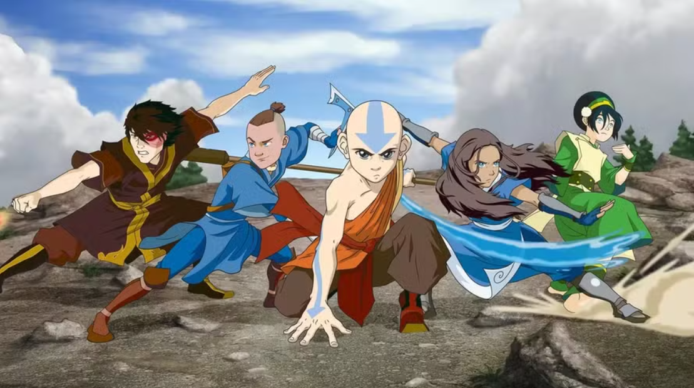
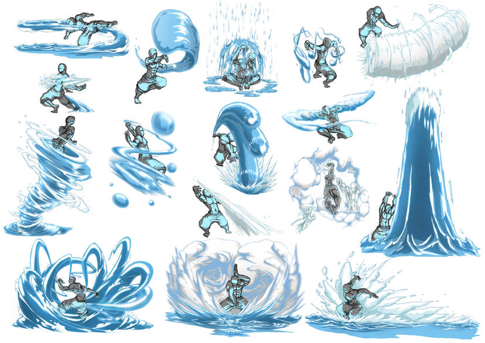
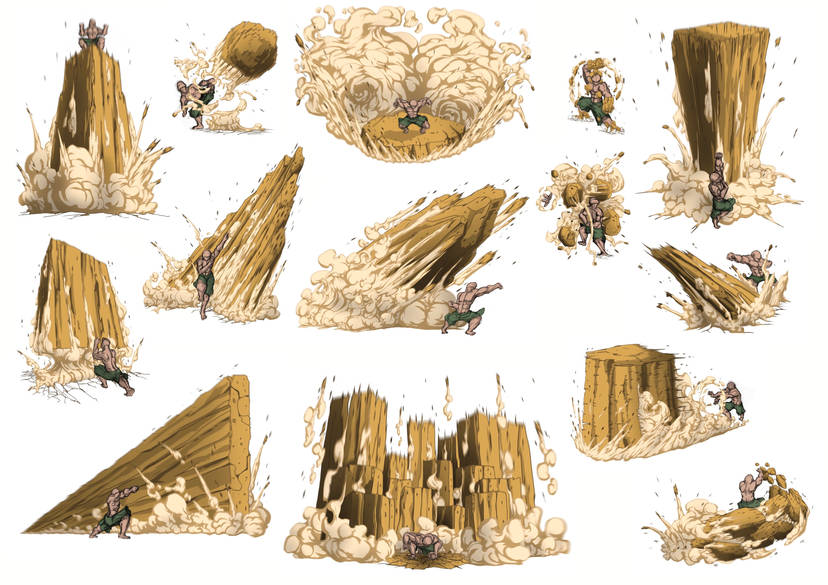
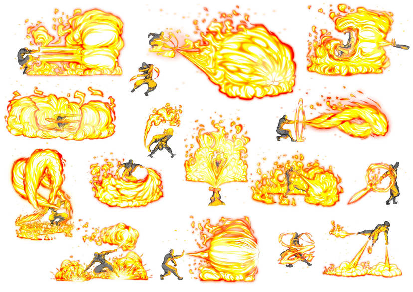

Avatar é uma série de dois cartoons, o primeiro contando sobre a vida de Aang, o último dobrador de ar que restou após uma grande guerra entre tribos de elementos, o qual é o avatar.
O segundo contando sobre a vida de Korra, a sucessora dos poderes de Aand, que nasceu na tribo da água do norte.
"Dobrar" um elemento, é a capacidade de manipulá-lo de diferentes maneiras e, a seguir, falaremos sobre as quatro principais dobras desse universo
- Dobra de Ar
Essa é a dobra mais rara, após a extinção dos nômades do ar pela nação do fogo durante a guerra dos 100 anos.
Ela é baseada em velocidade e destreza, focada para a defesa e não para o ataque.
O dobrador original de ar é o bizao voador, um grande e peludo animal, usado como montaria pelos nômades.

- Dobra de Água
Essa dobra é praticada por alguns cidadãos das tribos da água, que se localizam nos polos norte e sul do planeta.
Ela é baseada em adaptabilidade e versatilidade. Pode ser usada tanto para a defesa quanto para o ataque, ou até para a cura.
Originalmente, a dobra da água não veio de m animal, mas sim da Lua.
 - Dobra de Terra
Essa dobra é amplamente utilizada no reino da terra.
Ela exige forte conexão com a terra e tem como subdobras a lava ou até metal.
Os dobradores originais de terra são as toupeiras, que se utilizavam da dobra para criar caminhos entre as montanhas.
 - Dobra de Fogo
A dobra de fogo é a fonte de poder da Nação do Fogo e se torna muito mais fraca durante eclipses solares.
Ela é a mais agressiva das dobras, o que a faz ser principalmente focada em ataque.
Os dobradores originais de fogo são dragões, os quais foram caçados por dobradores de fogo durante muitos anos.
